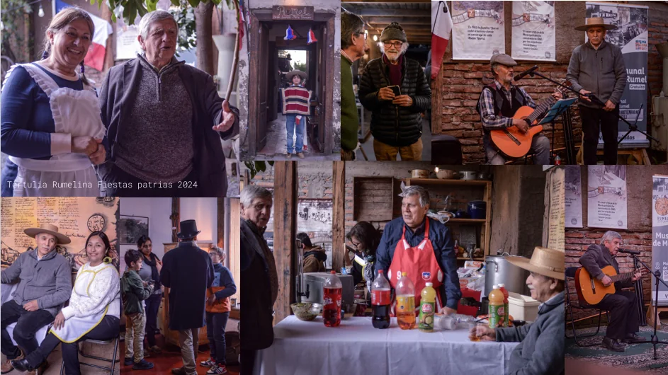
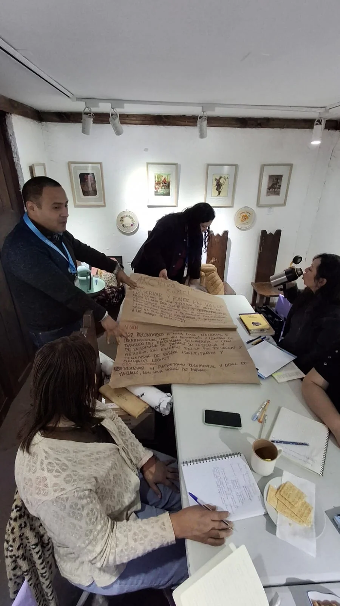
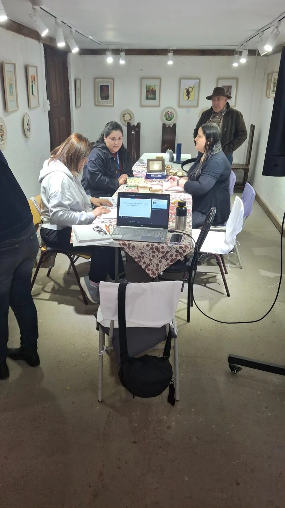
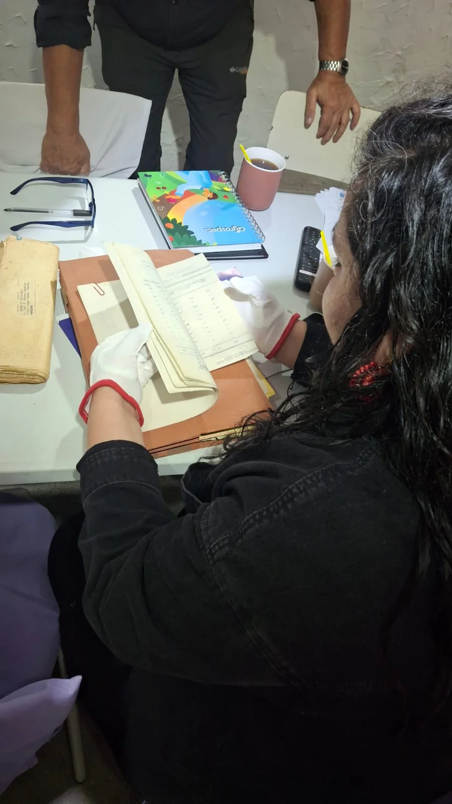
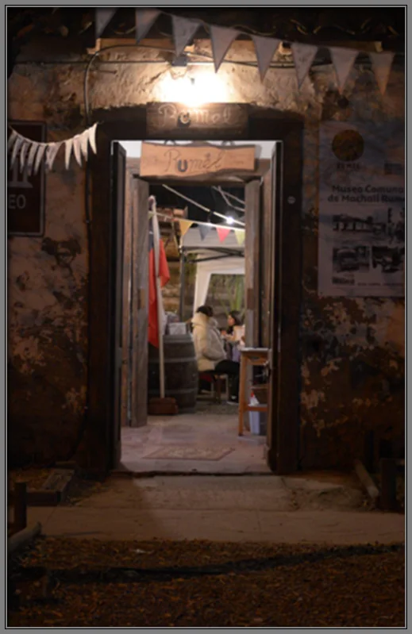

Rumel desde siempre para siempre

Punto de Cultura Comunitaria · Machalí
Rumel es una organización privada sin fines de lucro conformada por personas de Machalí, que tienen un objetivo y misión en común: preservar y poner en valor el patrimonio de la comuna de Machalí por medio de actividades artístico-culturales en el Museo ubicado en el sector de La Hacienda.
La agrupación comunitaria Rumel Desde Siempre… para siempre surge de la inquietud de diferentes machalinos y machalinas por la preservación y puesta en valor del patrimonio cultural de la comuna. Comenzó a funcionar a mediados de 2018 y el 10 de diciembre de ese año se constituyó como agrupación comunitaria con personalidad jurídica de la Municipalidad de Machalí.
En sus inicios el Museo Comunitario Rumel funcionó de manera itinerante, llevando cultura e historia local a distintos puntos de la comuna. El 3 de septiembre de 2021 consiguió por primera vez un espacio fijo en la histórica casona comunal de Av. San Juan 889, una construcción de 1890 (Hermanas Rey): recibió 414 visitantes entre septiembre y diciembre de 2021, 948 en 2022 y 751 en 2023. Desde diciembre de 2023 funciona en una casona patrimonial en la Hacienda de Machalí, donde hasta noviembre de 2024 ya había registrado 1.190 visitas.
El museo cuenta con cerca de 400 piezas y objetos, algunos agrupados en vitrinas y otros que recrean habitaciones de la vida campesina cotidiana de Machalí. Tiene dos salas cerradas, una sala abierta techada y un patio interior con exhibiciones permanentes sobre la vida de las y los machalinos en el siglo XX, con costumbres que se remontan a tiempos coloniales. Sus temáticas son educación e infancia, actividad arriera y campesina, actividad minera e industrial y vida cotidiana.
En 2025 el museo recibió en donación documentación de principios de 1900 sobre el período previo y la instalación de los campamentos mineros en Machalí, rescatada de un incendio, además de manuscritos del poeta popular Sergio Vera y de don Óscar Feliú donados por socios del museo. Así nació el proyecto «Rastreando Huellas, Tejiendo el Pasado» para crear el Archivo Comunitario Rumel, con asesorías técnicas del Archivo Regional de O’Higgins (Servicio Nacional del Patrimonio Cultural) en las que participan socias, socios y colaboradores de la comunidad.
La misión del archivo es preservar y poner en valor las formas de vida y cultura machalina, descentralizar y reconstruir la historia de la comuna por medio de testimonios y documentos, y transmitir rasgos identitarios y culturales desde las fuentes escritas y orales directas a las nuevas generaciones.
Registro fotográfico




Fuente: Reseña enviada por la coordinación de la red y presentación «Rastreando Huellas, Tejiendo el Pasado: creación del Archivo Comunitario Rumel», noviembre de 2026. Ficha en construcción: faltan el logo y las redes de la organización.